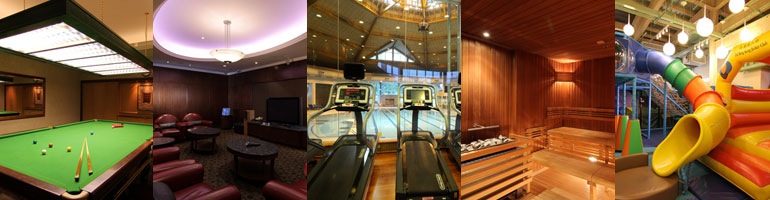

馬會概況
目標--使命與核心價值
行政架構
賽馬及馬場娛樂
會員會所
有節制體育博彩及六合彩獎券
慈善事物
馬會體育及社區發展
獎項及榮譽
模擬賽馬開獎結果
成為會員
簡介
會員卡簽賬權
會員優惠
Young Menbers
會員迎新
遵守事項
駕駛及泊車指南
設施指南
會籍狀態及表格章程
常見問題
電話指南
社區貢獻及慈善
青年發展
長者服務
體育康樂
藝術文化
教育培訓
醫療衛生
復康服務
家庭服務
環境保護
扶貧救急
馬會知多少
重要里程
香港賽馬博物館
130週年活動回顧
年報
環境可持續發展
馬會會員
關於會籍
簡介
最新資訊
會員卡簽賬權
直系親屬的簽賬權
雙魚河Debit Card
會員優惠
盡享JC Dollars全年獎賞
賺取及享用恒生信用卡Cash Dollars
Young Members
專用廂房
尊尚活動
會員迎新
迎新指南
活動
遵守事項
使用會所設施
使用馬場設施 (賽馬日)
基本衣著準則
駕駛及泊車指南
跑馬地馬場
沙田馬場
跑馬地會所
沙田會所
雙魚河鄉村會所
設施指南
會籍狀態及表格章程
常見問題
電話指南
聯絡我們
遵守事項
字型

一般須知
籃球場
雙魚河馬術中心
桌球室
更衣室
兒童玩樂區
兒童遊戲室
高爾夫球短擊區
高爾夫球模擬室
健身中心
按摩池、桑拿及蒸氣浴室
會員花園
多用途運動場 (可供籃球及羽毛球活動)
按摩室
壁球場
游泳池
乒乓球室
網球場
沙池 (雙魚河鄉村會所)
有關本會會籍及使用本會設施的規例，已在本會的會章、附則及設施指南中說明，其印本在會員服務中心、康樂辦事處及各餐廳備供索閱。任何附則及設施使用規例的制定、修改及修訂，一經張貼於本會告示板上即告生效。
本會除每年向會員籌集農曆新年歲賞基金，以便於農曆新年期間分派給各員工外，一概嚴禁會員向員工餽贈任何賞金。
會員如有充份理據投訴任何會員或其他使用本會設施的人士或本會員工，或擬對本會任何設施提出改善的意見，必須以書面將該項投訴或意見交給有關會所經理。
會員及其來賓在本會範圍逗留期間，必須時刻遵守香港法例及本會各項規例。
會員對其他會員和服務員工均以禮相待，愛護本會各項設施，並尊重他人使用設施的權利。
會員或其來賓如造成任何人士損傷或財產損害，該會員需賠償本會因此所承擔的所有財務責任。
在會所範圍內手提電話必須調較至靜音或震動模式，而所有餐廳、咖啡室、酒吧和康樂設施範圍內嚴禁使用手提電話通話，但在這些餐飲和康樂設施範圍以外地方、私人宴會廳、更衣及洗手間、LEVADE、雙魚河客房和停車場則允許使用手提電話通話。
來賓或十二歲以下的小童必須由會員陪同，才可在會所內逗留，會員並必須為來賓行為負責。
各間會所均對來賓使用會所設施有特別限制，尤其在七月和八月兩個月份，以及星期六、日及公眾假期期間。
除非得到本會同意，會員及來賓不得攜帶外來食物進入會所及馬場會員席。
會員及來賓應於本會範圍內尊重他人私隱，及不可於本會範圍內未經他人同意前攝影、攝錄及錄音。
謹請會員遵守個別餐廳的衣著準則。本會保留權利，可拒絕讓任何不符合指定衣著準則的會員和來賓進入有關的餐廳。
除法例要求或事前獲得會所經理批准外，寵物不得進入任何會所範圍。視障人仕攜帶導盲犬可進入會所，惟到訪前亦必須通知會所。
除非得到本會同意，會員不得於本會範圍內進行任何商業及銷售活動。
會員在會所範圍內禁止放飛模型飛機及任何遙控飛行儀器。
會員不得在會所範圍內驅動任何機動車輛或電動滑板。